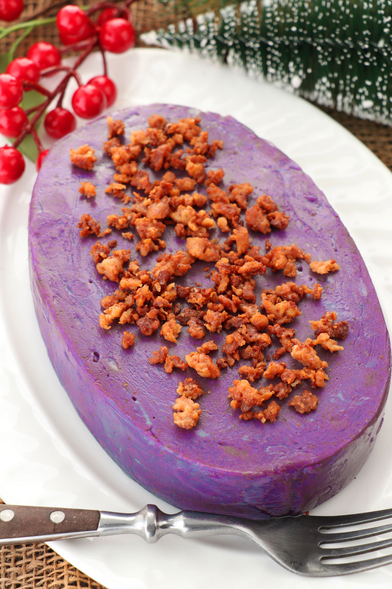

Cuisinang Capampangan: Manyaman!

Ube Halaya
Ingredients
- 2 cups cooked and mashed ube (purple yam)
- 1 can (14 oz) coconut milk
- 1 can (14 oz) condensed milk
- 1/4 cup butter
- 1/2 cup sugar
Time
- Prep Time: 10 minutes
- Cooking Time: 30-40 minutes
- Total Time: 40-50 minutes
- Servings: 6-8
Procedure
- Combine Ingredients: In a pan, combine mashed ube, coconut milk, condensed milk, butter, and sugar.
- Cook: Cook over medium heat, stirring constantly until thick and creamy.
- Cool: Pour into a dish and let cool before serving.